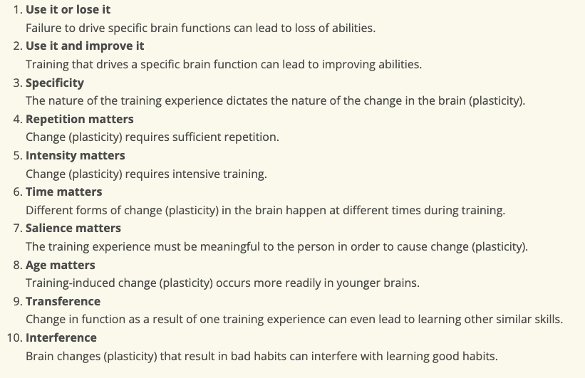

Neuroplasticity and Growth Mindset
Core blog post 30 January 2023
Neuroplasticity
Core blog post 30 January 2023
Neuroplasticity
Neuroplasticity is the brain's ability to change and adapt due to experience. It is an umbrella term referring to the brain's ability to change, reorganize, or grow neural networks. The connections among the cells in our brains reorganize in response to our changing needs. This dynamic process allows us to learn from and adapt to different experiences. This can involve functional changes due to brain damage or structural changes due to learning.
Here are ten principles of neuroplasticity, the factors identified as especially important in facilitating neuroplasticity in the context of brain injury.
Research suggests that a high emotional intelligence is associated with an array of benefits, from improved mental health and relationships, to higher job satisfaction and academic performance.
Understanding the principle of neuroplasticity can help people use and develop our brains especially during learning something new. As Researchers Lisa Blackwell of Columbia University and Kali Trzesniewski and Carol Dweck of Stanford University have said in study in the journal Child Development in 2007 both morale and grade points leapt when students understood intelligence is malleable. Students were more motivated to learn and challenge themselves when they knew that they were all fully capable of changing and developing the brain. Understanding this, I would definitely apply these principles in my journey to become a software engineer. I will choose to believe that I can definitely change and develop my brain and become a software engineer. I will not say this is too hard or I am not capable of becoming one. This will lead on to discussion about mindset in the later part of the blog.
What are some of the ways to increase your neuroplasticity
There are few ways for us to encourage our brain to grow and adapt:
Enrich Your Environment
Learning environments that allow focused attention, novelty, and challenge have been shown to stimulate positive changes in the brain.
Get Plenty of Rest
Research has shown that sleep plays an important role in brain growth! Sleep has important effects on both physical and mental health. You can improve your sleep by practicing good sleep hygiene. This includes developing a consistent sleep schedule and creating an environment that contributes to good sleep.
Exercise Regularly
Regular physical activity has a number of brain benefits. It can help prevent neuron loss in key areas involved in memory and other functions. It can help in creating new neurons in these key areas. It is recommended that we do 150 minutes of cardio exercise and at least 2 days of strength training exercises.
Play Games
Studies show that playing board, card, video, and other games can improve your brain's neuroplasticity
Practice Mindfulness
Practicing Mindfulness entails completely immersing your mind in the present moment, without lingering over the past and worrying about the future. Many studies have shown that practicing mindfulness can foster the brain's neuroplasticity
If you want to learn a bit more about Neuroplasticity, visit:
Blog: What Is Neuroplasticity?
Blog: What Is Neuroplasticity? A Psychologist Explains
Growth Mindset
Having a Growth Mindset means that you believe that your ability to do something can be developed over time through effort and persistence. It is believed that everyone can get smarter or more talented if they put the effort and time into it.
It is important for us to have a growth mindset so that we worry less about actually looking smart but focus more energy in actually learning. This is also more impactful if the whole group employs this mindset. It helps the group to feel more empowered and committed; we can also receive greater organizational support for collaboration and innovation.
It is a concept that I heard many times before exploring the subject but it is something that can be unintentionally not easily employed due to the ways we were brought up. Schools would often focus on praising the results/outcomes rather than focusing the journey and praising the efforts put in. I can easily fall in the trap to look smart and worry about what others can think of me.
To avoid this fixed mindset and employ the growth mindset, I will focus on reflecting back on the sprints I have done, listen in for any critical voices in my head, meditate on this reflection and find peace to focus solely on the learning itself rather than focusing about the future or regretting about the past.
If you want to learn a bit more about Growth Mindset, visit:
Blog: What Is a Mindset and Why It Matters
Blog: What Having a “Growth Mindset” Actually Means